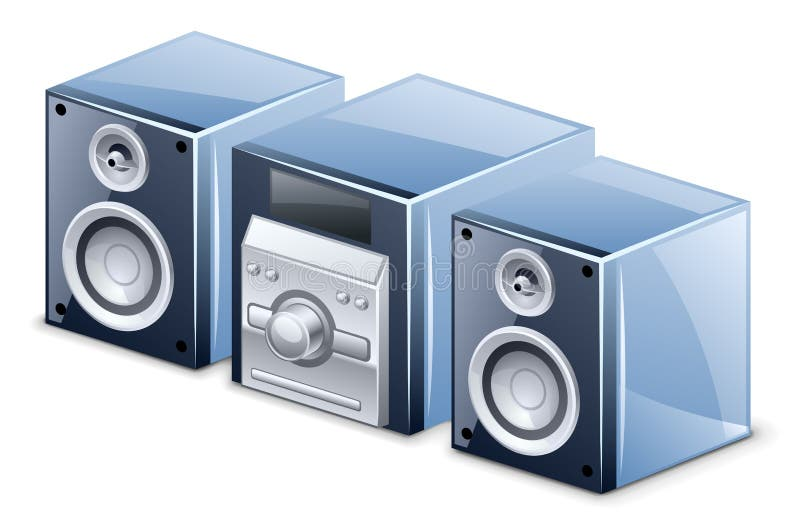
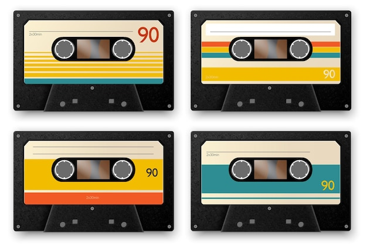

My Vocabulary Page
| æ | : | ## | æ | : | ## | ð | : | ## | ð | : | ## | ɒ | : | ||||||
| ə | : | ## | ɚ | : | ## | ɜ | : | ## | ɪ | : | ## | ŋ | : | ## | |||||
| ɔ | : | ## | ʃ | : | ## | θ | : | ## | ʊ | : | ## | ʌ | : | ## | |||||
| ʒ | : | ## | ɑ | : | ## | é | : | ## | è | : | ## | ||||||||
| £ | : | ## | € | : | ## |
ramble v(i) //
walk for pleasure, esp in the countryside
1.1/ Let's go rambling tomorrow.
ramble in somewhere
1.2/ He rambles in the park every morning.
1.3/ "Ramble in the countryside without damaging the landscape."
1.4/ We spent the summer rambling in Ireland.
ramble on somewhere
1.5/ "I rambled on the beach whilst the folks dined."
1.6/ "We rambled on the beach and through the boggy countryside."
ramble off (somewhere)
1.7/ "We ramble off into the countryside for a picnic."
1.8/ "The ramblin' man I wrote about on Tuesday managed to ramble off
the island of Manhattan and back out to the wide open spaces."
ramble through somewhere
1.9/ I love to ramble through the fields and lanes in this part of the country.
1.10/ You can ramble through some beautiful countryside in the area.
v(i) talk about somebody/something in a confused way, esp for a long time
2.1/ He had lost track of what he was saying and began to ramble.
ramble (on) about something
2.2/ What is she rambling on about now?
2.3/ "He tends to ramble about the scientific principles of his inventions,
which the cowboys don't want to listen to."
ramble off something
2.4/ Don't ramble off the first thing that comes to your mind.
2.5/ "Do you think he is able to focus well when you are talking to him
or does he tend to ramble off the point?"
n(c) (walk) a ramble
3.1/ We go for a ramble every Tuesday.
3.2/ "A walkinggroup has encouraged people to get outside
and go on a ramble over the festive period."
a ramble in somewhere
3.3/ "We often go for a ramble in the park after supper."
3.4/ "Winter is the time for a ramble in the countryside."
a ramble on somewhere
3.5/ "A ramble on the coast of Sussex."
a ramble along somewhere
3.6/ She will take you on a ramble along the street.
a ramble around(/about) somewhere
3.7/ "It is a pleasure to take a ramble around the neighborhood
after dinner."
a ramble by the seaside/lakeside/hillside/roadside
3.8/ "Let's go for a ramble by the hillside."
3.9/ "let us devote the hour of sunshine vouchsafed by wayward May to
a ramble by the seaside."
wander v(i,t) //
walk around slowly in a relaxed way or without any clear purpose or direction
1/ We spent the morning wandering around the old part of the city.
2/ She was found several hours later, wandering the street, lost.
3/ He was here a minute ago but he's wandered off somewhere.
someone's hands or eyes wander
4/ Her gaze wandered around the flat.
5/ If his hands start to wander, tell him firmly, "No, I'm not ready for this."
go off topic in a discussion
6/ We've wandered off(/from) the point somewhat.
your mind or your thoughts wander
7/ As he droned on, my mind began to wander.
8/ Halfway through the meeting my mind started to wander.
see also: walk, ramble, stroll, stride, totter, sway
pander to someone/something //
please other people by doing or saying something what you think
they want to do or say
1/ It's not good the way she panders to his every whim /wɪm/.
2/ He refuses to pander to the latest fashions.
3/ "Being the youngest child, you have more people to pander to your wishes."
4/ She accused the other candidate of pandering to radical
environmental groups.
pander to the mainstream
5/ "I'm not here to pander to the mainstream."
6/ "The band was accused of pandering to the mainstream that
many punk bands at the time were actively rebelling against."
pander to the flow of something
7/ "During the release of Boyhood, one Los Angeles Times critic
refused to pander to the flow of warm reviews."
flatter v(t) //
praise someone in order to make them feel attractive or important,
sometimes in a way that is not sincere
1.1/ Are you trying to flatter me?
1.2/ I knew he was only flattering me because he wanted to borrow some money.
1.3/ Perry would always flatter Mrs. Mitchell by praising her cooking.
v(t) flatter yourself: believe something good about yourself although
it might not be true
2.1/ Steve flatters himself that he is an excellent speaker.
2.2/ I flatter myself that I'm a good dancer.
2.3/ "How will you manage without me?" "Don't flatter yourself."
2.4/ Don't flatter yourself - you don't sing any better than we do.
(idiom) be/feel flattered: feel very pleased and proud because someone
has said good things about you or has made you feel important
3.1/ She was flattered by his attention.
be flattered to do something
3.2/ They were flattered to be invited to dinner by the mayor /mer/.
3.3/ She was flattered to hear that he had been asking about her.
be flattered at something
3.4/ I felt flattered at being asked to give a lecture.
3.5/ "I feel flattered at receiving your recognition and being
offered the opportunity."
3.6/ "You will sometimes feel flattered at some of the offers that you receive."
be flattered that ...
3.7/ I suppose we should be flattered that he agreed to come at all.
make someone look more attractive than usual
4.1/ Short skirts don't flatter me at all.
4.2/ That dress really flatters your figure.
4.3/ That colour doesn't flatter many people.
dwell v(i) //
dwell on something: keep thinking or talking about something,
especially something bad or unpleasant
1.1/ In his speech, he dwelt on the plight of the sick and the hungry.
1.2/ I don't want to dwell on this subject for too long.
1.3/ So you made a mistake, but there's no need to dwell on it.
1.4/ Her mind dwelled gloomily on the future.
1.5/ She had learnt never to dwell on what might have been.
1.6/ "If they dwell on a problem long enough, they’ll gain new insight
into how to fix it."
v(i) dwell: live somewhere
2.1/ He dwelt in a ruined cottage on the hillside.
2.2/ For ten years she dwelled among the nomads /'nəʊ.mædz/ of North America.
2.3/ The gorillas /gə'rɪləz/ in the high rainforests of Rwanda.
delve into something v(i) //
[investigate] examine something carefully in order to discover
more information about somebody or something
1/ It's not always a good idea to delve too deeply into someone's past.
2/ "The detective had to delve into the suspect's past to find
a motive for the crime."
delve into the truth
3/ We delve into the truth behind the egg industry.
4/ "It is a commission to delve into the truth of European colonialism
and its crimes and genocide."
5/ Let us delve into the truth about the grind and the glory of keeping a home
and raising a family today.
mediocre adj //
not very good
1/ The film's plot is predictable and the acting is mediocre.
2/ "Should I tip 20% in a restaurant even if I believe the service is mediocre?"
3/ Parents don't want their children going to mediocre schools.
a mediocre performance
4/ "The striker has been dropped after a mediocre performance."
5/ "In some cases, mediocre performance is attributed to poor attendance,
which means excessive absenteeism and tardiness."
mediocre results
6/ Tech giants bury mediocre results under AI hype.
7/ "When you set boundaries, you will only attract a narrow band of people.
That is a sure recipe for producing mediocre results."
synonym: ordinary, average, second-rate
sceptical adj //
(US skeptical) doubting that something is true or useful
1/ Many experts remain skeptical about(/of) his claims.
2/ I’m extremely sceptical about what I read in the press.
see also: be doubtful about something/doing somethig
clutch v(i,t) //
take or try to take hold of something tightly, usually in fear, worry or pain
1/ Silent and pale, she clutched onto her mother's hand.
2/ Clutching the money to his chest, he hurried back to the bank.
3/ He collapsed, clutching his stomach.
see also: hold onto something
clutch at something: try very hard to hold something
4/ Feeling herself fall, she clutched at a branch.
clutch n(c) //
[group] a small group of people or things
1/ a fresh clutch of students
(vehicle) 離合器/極力子
2/ Push the clutch in, put the car into gear, rev the engine,
and then gently let the clutch out.
n(c) a difficult and important situation that needs a lot of skill
to deal with successfully
3/ This team was able to perform in the clutch every time, he said
4/ He remained cool under pressure and made accurate throws
in clutch situations.
somebody's clutches: the control of somebody
5/ He has fallen into the clutches of that woman.
clutch adj //
(before noun) able to do something when it is especially difficult
or especially needed
1/ Moose, always reliable under pressure was an amazing clutch hitter.
2/ He developed the reputation for being the bigger winner,
the clutch performer.
(before noun) done successfully when this is especially difficult
or especially important
3/ It was his leadership and clutch play that made him special.
4/ The team managed only three hits after falling behind
but came up with the clutch hit when it needed it the most.
attribute v(t) //
attribute something to somebody/something:
say or think that something is the result or work of somebody/something else
1/ The doctors have attributed the cause of the illness to an unknown virus.
2/ Her success can be attributed to three main factors.
3/ She attributes her success to hard work and a little luck.
4/ The power failure was attributed to the recent storms and high winds.
attribute something to somebody: say or believe that somebody is responsible
for doing something, esp for saying, writing or painting something
5/ This play is usually attributed to Shakespeare.
6/ a quote that has often been falsely attributed to George Patton
7/ This idea has long been attributed to Keynes, but in fact he was not
the first to think of it.
attribute n(c) //
a quality or feature of somebody/something
1/ Patience is one of the most important attributes in a teacher.
2/ Self-confidence is a rare attribute in a 17-year-old.
3/ She has the physical attributes to become a championship swimmer.
4/ What attributes should a good manager possess?
5/ What are the skills and personal attributes needed for success?
an attribute of somebody/something
6/ A key attribute of the new service will be flexibility.
7/ The most basic attribute of all animals is consciousness.
an attribute for somebody/something
8/ Organizational ability is an essential attribute for a good manager.
9/ "Graciousness was the number one attribute for a secretary to possess."
driving force n(c)
a driving force for/behind/in something
1/ The explosion in stock market wealth has been an important driving force
behind consumer spending.
2/ Trade is the driving force for sustained economic prosperity.
3/ Women are definitely a driving force in the industry, she said.
few chances vs little chance
little chance: the probability of something occuring is low
few chances: the number of opportunities of doing something are rare.
For example, if the project can only work during a solar eclipse,
it would have few chances of success in any given year.
1/ The project has little chance of success. (It will probably not work)
2/ I have little chance of swimming one hundred meters in 105 seconds.
3/ I have few chances to go to comedies because my wife does not like them.
(but when the opportunity does arise, I will very likely succeed in seeing the movie)
not only ... but also ... conjunction
Not only A, but also B
1/ Not only was it raining all day at the wedding but also the band was late.
2/ Not only did she forget my birthday, but she also didn't even
apologise for forgetting it.
somebody/something (...) not only ... but also ...
3/ The car not only is economical but also feels good to drive.
4/ "We not only failed, but also lost all those devices."
5/ The war caused not only destruction and death but also generations of hatred
between two communities.
6/ I identified with Denzel Washington not only as an actor but as a person.
monotonous adj //
not changing and therefore boring
1/ The music becomes monotonous after a while.
2/ She stood all day ironing a monotonous succession of clothes and sheets.
a monotonous routine, a monotonous job
3/ "Some individuals may prefer a monotonous job without responsibility
because their minds can drift elsewhere."
4/ "We have been trained by office jobs to follow a monotonous routine."
monotonous work
5/ The weavers have to do monotonous work every day.
6/ "People can't stay focused when they need to do monotonous work
all the time."
a monotonous class(/lesson)
7/ "A monotonous lesson will cause students to become bored very easily
and get distracted during class and they may decide to do their own things
during lesson time."
see also: dull, repetitious
wake up v //
wake (somebody) up: (cause somebody to) stop sleeping
1/ Come on, wake up - breakfast is ready.
2/ He woke himself up with his own snoring!
3/ If you cry you'll wake your brother up.
4/ I get up, shower, go to school, go home, sleep, wake up, and do it all over again.
5/ My alarm clock woke me up this morning.
see also: awake, awaken, rouse
(make somebody) notice a situation and do something about it/p>
6/ Companies need to wake up and pay attention to the public's increasing
concern about the environment.
7/ There is nothing like a disaster to wake people up.
wake up on the wrong side of bed: feel grumpy /'grʌmpi/ and irritable;
be easily annoyed
8/ He can't stop shouting at me: he must have woken up on the wrong side
of bed this morning.
9/ Dad got up on the wrong side of bed, and he’s been grumpy all day.
in principle idiom //
if you agree with or believe something in principle,
you agree with the idea in general, although you might not support it
in reality or in every situation
1/ We were willing in principle to offer her a room in our house.
2/ In principle there is nothing that a human can do but a machine
might not be able to do one day.
agree something in principle, agree to something in principle
3/ The terms of the contract were agreed in principle last week.
4/ They have agreed to the proposal in principle but we still
have to negotiate the terms.
agree that ... in principle
5/ In principle I agree that mothers should spend as much time as possible
with their young children, but it isn't easy.
agree with somebody(/something) in principle
6/ I agree with it in principle but I doubt if it will happen in practice.
7/ I agree with you in principle, but we'll need to discuss the details.
see also: in general
keep something at bay idiom //
control something and prevent it from causing you problems
1/ She fought to keep her unhappiness at bay.
2/ The doctors have been able to keep her illness at bay for several months.
on sale, for sale phrase //
for sale: if you're selling something, it is for sale;
offered to be sold, made available to purchasers /'pɜrtʃəsərz;/
1/ Student A: "I need to buy a widget."
Student B: "Go to Jumbo. They have them for sale."
2/ "Secondhand electronic devices are for sale."
3/ "The city of Vancouver in Canada is very clean and the shops display
their goods for sale in an orderly manner."
on sale: if you lower the price, it goes on sale;
able to be bought at reduced prices
4/ Student A: 'I bought my new skis /sgi:z/ for 900 Swiss Francs.'
5/ "Everything's on sale at Thanksgiving and that includes food."
6/ "One thing that I usually buy on sale at Thanksgiving is yams."
7/ "Customers got in line to buy a 49-inch Toshiba television,
that went on sale on Thanksgiving Day for $149."
on demand idiom //
at any time that someone wants or needs something
1/ They believe that abortion should be available on demand.
2/ The service allows you to watch video on demand.
3/ "You can watch live broadcasts on demand or watch movies and TV dramas
on the Internet TV."
4/ "The show is available on demand on the application."
synonym: upon request, on request
warrant v(t) //
make something necessary or appropriate in a particular situation
1.1/ Obviously what she did was wrong, but I don't think it warranted
such a severe punishment.
1.2/ They do not consider the case serious enough to warrant a government enquiry.
1.3/ This tiny crowd does not warrant such a large police presence.
warrant somebody/something doing something
1.4/ The situation scarcely warrants their(/them) being dismissed.
warrant attention/consideration
1.5/ Another area that warrants attention is that of funding for universities.
synonym: justify
n(c) warranted goods/products
2.1/ Our products are warranted against defects /'di:fekts/ in materials
and workmanship.
2.2/ "Your L'ATELIER DE BEAUTE mini fridge is warranted against original defects
in material and workmanship for a period of 1 year from the date of purchase."
2.3/ "F40C4TMP portable mini fridge is warranted to the retail customer for
12 months from date of retail purchase, against defects in material
and workmanship."
warrant n(c) //
an official document approved by an authority, esp a judge, which gives the police
permission to do certain things
1/ a search warrant
2/ an arrest warrant
3/ Judge La Riva had issued an arrest for his arrest.
warranty n(c) //
a written promise by a company to repair or replace a product that breaks within
a fixed period of time or do again a piece of work that is not satisfactory
1/ a two-year warranty
2/ The warranty covers the car mechanically for a year, with unlimited mileage.
3/ The warranty on my watch ran out just before it broke.
4/ "You can purchase a one-year warranty for your tree at a cost of
$25.00 per tree."
a parts and labor warranty
5/ A two-year parts and labor warranty is standard.
6/ "With the llifetime parts and labor warranty, you pay for parts and service once,
and you never pay for the same parts or service ever again!"
7/ "That's why we offer our customers peace of mind with our exclusive 6 month
parts and labor warranty on most items."
n(u) under warranty
8/ The laptop can be repaired for free if it's still under warranty.
9/ I’ve had problems with the car, but it’s still under warranty.
warranty period
10/ I was told the kettle could not be replaced outside of the warranty period.
11/ If you buy electronic goods from a high street store, don't let the store
fob you off by telling you it's outside the warranty period.
12/ The repair took place during the three-year warranty period of the new car,
and as such will have been paid for by the manufacturer, not by the vehicle owner.
13/ "Tractors, chassis cabin vehicles and box vans less than 24 months old
and with an odometer reading of less than 300,000 km have a warranty period
of 6 months."
vessel n(c) //
a ship or a large boat
1.1/ It was one of the largest vessels afloat.
1.2/ "No one aboard the vessel was injured."
1.3/ Police boarded and searched the vessel.
1.4/ There are twenty three sailors on board the vessel.
1.5/ "On 5 November 2017, the vessel sailed to Shenzhen at about 1430 hours
but returned to waters outside Hong Kong at about 1535 hours."
1.6/ The damaged vessel sailed on for another fifty miles.
types of vessels: a container ship, a cargo ship, an oil tanker,
a fishing vessel, a passenger ship, etc
1.7/ "A freight vessel anchored in the Aegean Sea off the coast
of Greece in April."
1.8/ "Five Indian crew members of a cargo vessel arrived in Mumbai on Sunday
after spending 13 months in a jail in Greece."
1.9/ "A passenger ship departed from Gas Port in Calapan City."
n(c) blood vessel /'blʌd''vesəl/:
any of the tubes through which blood flows in the body
2.1/ A heart attack is caused by the blood vessels that supply the blood
to the heart muscle getting blocked.
2.2/ "Sometimes individuals can rupture a blood vessel during weight training."
(figurative) almost burst a blood veseel
2.3/ Mum almost burst a blood vessel when I told her what happened.
n(c) a container used to hold liquids
3.1/ We used bowls, pots, bottles, pitchers – any vessels we could find.
3.2/ "Discerning consumers have fully embraced aluminium as an alcohol vessel."
3.3/ "Peter set out to make a coffee vessel that was attractive yet simple."
3.3/ "A drinking horn is the horn of a bovid used as a drinking vessel."
stereo n(c) //
n(c) a stereo system: a machine that plays audio or video,
sometimes with a radio, that has two separate speakers so that
you hear different sounds from each 立體聲
1/ Loud music was coming from the car stereo.
2/ Let's put some music on the stereo.
3/ "A stereo system takes up more room than a single wireless speaker."
n(u) in stereo
4/ The concert will be broadcast in stereo.
5/ "The music you hear in a club is played in stereo."
adj(before noun) stereo, stereophonic /''sderiə'fɒnɪk/
a home stereo system
6/ "We build a home stereo system on a tight budget."
a stereo speaker, stereo headphones
7/ "Listen to music on stereo headphones so that the vibrations
can be keenly felt."
8/ "Who should buy stereo speakers? Complex, expensive sound systems
are probably best left to audiophiles and home theater enthusiasts."
stereo sound
9/ "I become immersed in stereo sound."
10/ "Enjoy music in stereo sound with two speakers."
cassette n(c) //
a flat, rectangular device containing a very long strip
of magnetic material that is used to record sound or pictures
1/ He listens to cassettes, CDs, even vinyl records
insert a cassette
2/ Insert the cassette and press play.
3/ "She went to insert the cassette in the player but found
already there was one."
4/ "Insert a cassette into the slot on the front panel with the arrow
on the cassette pointing towards the drive."
wind a cassette tape
5/ "I try to wind a cassette tape with a pencil."
6/ "You would have to wind the cassette tape back into its housing."
an audio cassette, a video cassette
7/ "If you collect audio cassettes, chances are you like the look of
the ones with paper labels best."
8/ "We recorded television programs on video cassettes."
9/ "I used to record on video cassettes some important events like
my interviews with various media."
a cassette player, a cassette recorder
10/ "Television news recorded using video cassette recorders was easier
to edit, duplicate and distribute."
11/ "A videocassette recorder is commonly used to record television programs
broadcast over the air or by cable and to play back commercially
recorded cassettes on a television set."
remark: n(c) vinyl record /'vaɪnəl/ 黑膠唱片
be composed of //
(be composed of) consist of
1/ Muscle is composed of different types of protein.
2/ The audience was composed largely of young people.
v(t) (compose) be the parts that something is made of
3/ At that time, women composed only 1.6 percent of the US forces
4/ Ten people compose the committee.
see also: make up
account for
(+ percentage) form the total of something
1/ High-tech companies account for 32% of the total value of
the payrolls in the area.
2/ People over 60 account for 50 percent of the total population.
3/ The Japanese market accounts for 35 per cent of the company's revenue.
[explain] explain the reason for something or the cause of something:
4/ The poor weather may have accounted for the small crowd.
5/ Rural Americans are often older than those in other parts of America
and that may account for the slower adoption rates for internet access.
6/ He was unable to account for the error.
7/ How do you account for the show's success?
8/ The differences in achievement between the pupils are partly accounted for
by differences in age.
consist of something v //
be made of or formed from something
1/ The team consists of four Europeans and two Americans.
2/ It's a simple dish to prepare, consisting mainly of rice and vegetables.
3/ Each class consists of a similar number of students of mixed academic abilities.
comprise v(t) //
(+ percentage) account for
1/ Italian students comprise 60% of the class.
2/ Manufacturing comprises 14% of the state's economy.
3/ Oil and coal comprise 70% of the nation’s exports.
consist of
4/ The course comprises a class book, a practice book, and a CD.
5/ Our staff comprises many nationalities.
be comprised of: consist of
6/ The course is comprised of ten lectures and five seminars
on the theory of economics and banking.
7/ "Hong Kong is comprised of four main areas: Hong Kong Island, Kowloon,
the New Territories and the Outlying Islands."
make up v(t) //
form a particular thing, amount, or number as a whole
1.1/ Car accident victims make up almost a quarter of the hospital's patients.
1.2/ Women make up 56 per cent of the student numbers.
1.3/ Internet-based purchases, first offered about two years ago,
now make up 10% of sales.
be made up of something
1.4/ The course is made up of 12 two-hour sessions.
1.5/ The book is made up of a number of different articles.
v(t) make an amount of something complete or correct
2.1/ I have £20,000 and I need £25,000 but my parents have promised
to make up the difference.
2.2/ I suspect we were only invited to make up numbers.
2.3/ We’re $5 short, but I’ll make up the difference.
make up for something: take the place of something
lost or damaged, or compensate for something bad with something good
3.1/ No amount of money can make up for the death of a child.
3.2/ This year's good harvest will make up for last year's bad one.
3.3/ He bought me dinner to make up for being so late the day before.
3.4/ After all the delays, we were anxious to make up for lost time.
3.5/ Her enthusiasm makes up for her lack of experience.
make something up: invent something, such as an excuse or a story,
often in order to deceive
4.1/ I made up an excuse about having to look after the kids.
4.2/ My dad was always really good at making up stories.
4.3/ I was trying to make up a good excuse for being late.
4.4/ I told the kids a story, making it up as I went along.
take up v //
start doing a particular job or activity
1.1/ He left a job in the City to take up farming.
1.2/ Have you ever thought of taking up acting?
1.3/ When did you take up Japanese as a second foreign language?
take up a job
1.4/ He will take up his post as the head of the civil courts
at the end of next month.
1.5/ "He took up a new job in the government as director of
communications and planning in July 2010."
see also: take on something, take to something
discuss something or deal with something
2.1/ Increasingly, more farmers are taking up the challenge of
growing asparagus /ə'sberəgəs/ (蘆筍).
2.2/ "Katrina decided to take up the challenge of double majoring."
take the matter up with somebody
2.3/ "Children do not always care to take the matter up with parents."
2.4/ The school took the matter up with the police.
fill an amount of space or time
3.1/ I know how busy you must be and naturally I wouldn't want to
take up too much of your time.
3.2/ "I tried adding a swing set, but the pool took up too much space."
different from one another
US: different than one another
1/ And these novels are all pretty different from one another
in style, tone and content.
2/ They are both very good and rather different from one another.
3/ "Atoms are different from one another based on the number of
protons, neutrons, and electrons they contain."
4/ "On the outside, we couldn't be more different than one another
- her life was completely opposite from mine."
remark: 'one another' means 'each other'
v(i) differ from one another
5/ "People differ from one another in their ability to handle stress."
6/ "Individuals differ from one another not only in height, weight, colour,
appearance, speed of reaction but also in behaviour."
vary v(i) //
if things of the same type vary, they are different from each other;
if something varies, it changes depending on the situation
1.1/ Class size varies greatly.
1.2/ Estimates of how many civilians were killed varied widely.
1.3/ Costs are likely to vary depending on where you live.
vary in something
1.4/ The rooms vary in size.
1.5/ The samples varied in quality but were generally acceptable.
1.6/ The students' work varies considerably in quality.
1.7/ Flowers vary in color and size.
vary between something, vary between A and B
1.8/ Class numbers vary between 25 and 30.
1.9/ "Population sizes vary between countries."
1.10/ "Last 5 years annual profits vary between €100M and €200M."
vary from A to A
1.11/ Test scores vary from school to school.
1.12/ "Alcohol laws vary from state to state in the US."
1.13/ Results can vary greatly from year to year.
1.14/ The value of stocks will vary from month to month.
vary from A to B
1.15/ The heights of the plants vary from 8 cm to 20 cm.
1.16/ "Today's temperature in Hong Kong varies from 28oC to 32oC."
1.17/ "The in-flight catering services vary from economy class,
business class to first class."
vary from one to another (see also: differ from one to another)
1.18/ Cities are unique and vary from one to another, and thus,
one freight /freɪt/ system may not be suitable to all urban areas.
vary according to something
1.19/ Charges vary according to size.
1.20/ Fines vary according to your excessive driving speed."
1.21/ Prices vary according to the type of room you require.
1.22/ Quentin’s mood seems to vary according to the weather.
with varying degrees/levels of something
1.23/ She has tried different diets with varying degrees of success.
1.24/ We have tried several different approaches, with varying degrees of success.
1.25/ There are a number of routes to the summit, with varying levels of difficulty.
see aslo: differ, various
v(t) change something to make it different
2.1/ The job enables me to vary the hours I work.
2.2/ The aerobics instructor varies the routine each week.
2.3/ Some people give a regular monthly donation while others vary
the amount they give.
2.4/ Employees can vary their work time up to two hours before or after
normal working hours.
parcel n(c) //
[package] 包裹, 郵包
1/ a food parcel
2/ There were several parcels waiting for her in the post room.
3/ You have 10 business days to collect your parcel once it has arrived
at a post office.
up-to-the-minute
containing the very last information or being the newest
1/ up-to-the-minute news reports
2/ up-to-the-minute design/ style/ fashion
3/ The website provides up-to-the-minute information on the best financial deals.
see also: up-to-date
up-to-date adj //
(also: up to date) having or including the most recent information
1/ up-to-date information
2/ All up-to-date prices can be found on our website.
3/ We work hard to keep our database up to date.
most up-to-date
4/ "Get the most up-to-date news on our Twitter or our Mastodon."
5/ Visit our website for the most up-to-date match reports.
keep (somebody) up to date with/on something
6/ We are keeping up to date with the latest developments.
7/ She brought him up to date with what had happened.
8/ We'll keep you up to date with any news.
9/ I am very up to date on this sort of thing because I listen to the news.
10/ "Stay relevant and up-to-date with technology as a virtual assistant."
modern or very recent
11/ up-to-date equipment
12/ up-to-date technology
13/ We'll have to bring our equipment up to date.
14/ Germany's most up to date electric power station
15/ "However, the cost of the most up-to-date equipment has since grown to the
point where a new fab can cost several billion dollars."
adverse effect // or //
(adj) adverse: having a negative of harmful effect on something
1/ The match has been cancelled because of adverse weather conditions.
2/ So far the drug is thought not to have any adverse effects.
3/ Recent bad publicity has had an adverse efect on sales.
4/ Body piercing is only one of the activities that have an adverse effect on health.
(clinical) adverse outcome
5/ Patients older than 64 years were more likely to have an adverse outcome
and prolonged hospital stay.
on the surface //
superficially
1/ On the surface, he seems like a very successful businessman,
with his life all put together. But if you pull back the curtain a bit,
you realize that his life is a mess.
2/ Everything looked fine on the surface, but after we began we realized that
the plan was fundamentally flawed.
geographic adj //
same as: geographical //
1/ The company's fastest growing geographical area was Asia,
which increased by 22%.
2/ geographic features(/conditions)
3/ geographic conditions of India
4/ effects of geographic conditions upon social realities
sociable adj //
sociable people like to meet and spend time with other people
1/ Rob's very sociable - he likes parties.
2/ The event promises to provide a relaxed and sociable atmosphere
where fans can mingle with stars.
3/ I hope they won't think I'm antisocial if I don't join them in the bar.
synonym: gregarious //
antonyms: unsociable //, antisocial
prickly adj // or //
unfriendly and easily offended or annoyed
1/ She was asked a couple of questions about her private life
and got a little prickly.
complicated and difficult to deal with
2/ a prickly issue/situation
3/ A 'hedgehog highway' was created at railway station to solve a prickly issue.
covered with prickles // 棘 (compare with: thorns)
4/ a prickly cactus
5/ Many of our plants are prickly and this one is no exception.
6/ Chestnuts had burst out of their prickly green husks.
having sharp points that stick out, or causing a stinging feeling
7/ The wool felt prickly and itchy against his skin.
8/ I find this sweater slightly prickly.
see also: pointy, n(c) prickle
thorn n(c) //
荊棘; a thorn in your side 眼中釘
1/ A relentless campaigner, he was a thorn in the government's side
for a number of years.
2/ She has become a thorn in the side of the government since publishing
a number of reports pointing out that public cash was being mishandled.
pointy adj //
(informal) shaped into a point; having a pointed tip or end
1/ She was wearing a pointy hat.
2/ Green oleander bush with pointy leaves blooms with bright pink flowers in park.
the pointy end of a knife
3/ "Ultimately, the pointy end of a knife helps make the job of cutting and slicing
faster and easier, resulting in a better end product."
4/ Don't try to argue when you find yourself at the pointy end of a knife.
remark: the point of a knife is the sharp end of the knife.
synonym: pointed
spiky adj //
having sharp points
1/ a spiky cactus
2/ "Spiky plants are edgy, architectural plant forms that invigorate gardens
with excitement."
3/ It has spiky leaves, tinged with a delicate pink around the edges.
see also: prickly, spiny
spiky hair
4/ Ryuu has spiky hair that is dark at the top and light at the bottom.
5/ "Case in point, the real root cause of prickly hair is shaving,
especially with a dull or used razor."
see also: n(u) bedhead, wake up with bedhead
beyond vs behind
(distance) behind is the more general word;
beyond has the feeling of long distance
1.1/ I am behind your back.
1.2/ The river is behind the house
1.3/ A spectacular walled garden lies behind the house.
1.4/ The town is beyond the mountain.
1.5/ "America is far beyond the ocean."
meanings of behind
(time)
2.1/ The bus was behind schedule.
2.2/ New York is five hours behind London.
(abandon) leave behind
2.3/ They'd been forced to leave behind their businesses and possessions.
(finished, be settled)
2.4/ Now that the divorce is behind us, we can move on.
(supporting)
2.5/ He is the man behind the modernization of the organization.
2.6/ The country was behind the president.
(cannot catch up)
2.7/ Mail deliveries usually fall behind around the winter holidays,
but they improve beyond the new year.
2.8/ During the pandemic, many people got behind on their rent.
(= the rent payments were arriving late)
2.9/ She got behind with her mortgage, and the house was repossessed.
meanings of beyond
(over, exceeding)
3.1/ Few children remain in school beyond the age of 16.
3.2/ People need to know math through their school years and beyond.
(out of)
3.3/ The situation has changed beyond recognition.
3.4/ How he managed to find us is beyond me. (= I cannot understand it)
3.5/ Her commitment to her profession is beyond doubt.
(= no one can doubt it)
3.6/ The mechanic announced that the engine was beyond repair.
pass v(i,t) // or //
move past or move to the other side of somebody/something
pass (somebody/something)
1/ He gave me a smile as he passed.
2/ I passed him on the stairs this morning.
3/ You'll pass a bank on the way to the train station.
4/ She passed me in the street without even saying hello.
5/ Several people were passing but nobody offered to help.
let me pass, allow me to pass
6/ He took a step backwards to allow her to pass.
7/ The crowd parted(/split) to let the truck pass.
8/ The security guard refused to let us pass.
pass by somebody/something (see also: a passer-by)
9/ After a strong start, she was passed by several runners
on the final lap and finished ninth.
10/ I was just passing by her house, so I thought I'd call in and see her.
11/ Did you tell me about that? Sorry, it completely passed me by.
(= I didn't notice it)
pass you on the left, pass you on the right
12/ (US) "Seated on the left, the driver naturally preferred that other wagons
pass him on the left so that he could be sure to keep clear of the wheels of
oncoming wagons. He did that by driving on the right side of the road."
13/ "Drivers in Hong Kong are passing you on the right because
they are driving on the left side of the road."
see also: overtake, surpass, go past, pass through
(this entry does not include other usage of 'pass')
overtake v(t) //
go past something by being a greater amount or degree
1/ We mustn't let ourselves be overtaken by our competitors.
2/ Our US sales have now overtaken our sales in Europe.
3/ DVDs are overtaking videos in popularity.
overtake somebody/something as something
4/ Nuclear energy may overtake oil as the main fuel.
5/ "Singapore overtakes Hong Kong as the most costliest cities
for goods, services aimed at the wealthy."
v(i,t) (pass) come from behind another vehicle or a person
and move in front of them
6/ Always check your rear view mirror before you overtake (another car).
7/ (AU) "Pulling over to the left will give the emergency vehicle
as much space as possible to overtake you."
surpass v(t) //
do or be better than
1/ Our team's achievements surpass those of teams in earlier years.
surpass somebody/something by something
2/ His time for the 100 metres surpassed the previous world record
by one hundredth of a second.
3/ "Shanghai, home to more than 24 million people, surpassed Hong Kong
by more than one full rating point to easily earn the number one ranking
on the list."
surpass somebody/something with something
4/ "We surpass competitors with our mobile application."
surpass somebody/something as something
5/ "Singapore surpasses Hong Kong as Asia-Pacific's most expensive
housing market in price and rent."
surpass your expectations
6/ "When a student surpasses my expectations, I feel proud and betrayed."
surpass yourself
7/ With this painting he has surpassed himself.
'surpass' is to go beyond or exceed something in quality or quantity;
'pass' is to move or be moved from one place to another
rift n(c) //
a large crack in the ground or in rock
1/ The stream had cut a deep rift in the rock.
a rift valley
2/ "The Great Rift Valley in Africa is one of the most famous
rift valleys in the world."
see also: a gorge /gɔ:rdʒ/, a valley
n(c) a crack, split, or break in something
3/ The wind had torn open a rift in the clouds.
4/ The schoolboys peered through a rift in the wall.
n(c) a rift between A and B: a serious break in friendly relations
5/ the rift between the two branches of the legal profession
6/ There is a rift between Tom and Mary.
7/ Disagreements over foreign policy have led to a rift between
these two countries.
8/ Efforts to heal the rift between the two countries have failed.
a rift over something
9/ Today’s announcement could lead to a further rift over public spending.
confront v(t) //
face, meet or deal with a difficult situation or person.
1/ I had to confront him about the damage to the car.
2/ This was the first time he had confronted an armed robber.
3/ He is willing to confront problems directly.
4/ It's an issue we'll have to confront at some point, no matter
how unpleasant it is.
5/ He forced the country to confront the issue of deforestation.
6/ She knew that she had to confront her fears.
be confronted by(/with) somebody/something
7/ Confronted by an angry crowd, the police retreated.
8/ I was suddenly confronted by the task of rewriting the entire book.
9/ When I took office, I was confronted with new guidelines.
10/ I thought I would remain calm, but when I was confronted with(/by)
the TV camera, I became very nervous.
11/ Most people when confronted with a horse will pat it.
see also: overcome, face up to something, deal with something
confront somebody with something: make somebody face or deal with
an unpleasant or difficult person or situation
12/ He confronted her with a choice between her career or their relationship.
13/ These texts constantly confront the reader with their demanding claims.
14/ "Now then, stand here, because I am going to confront you with evidence
before the Lord as to all the righteous acts performed by the Lord
for you and your fathers."
siren n(c) //
a device for making a loud warning noise 警鐘
1/ a fire siren/ a police siren/ an ambulance siren
sound a siren
2/ In an emergency, the siren will be sounded.
3/ "Simple rule is when ambulance sounds its siren, every car in front
must give way, in a safe manner of course."
a siren sounds (a warning/ an alert)
4/ In an emergency, the siren will sound repeatedly.
5/ "How do fire sirens sound the alert in an emergency?"
6/ "If there is an emergency in the area where you live, the local siren
will sound a warning."
7/ "When bells ring and sirens sound you will know that they are
doing so to honor the firefighters."
a siren goes off
8/ When the air raid siren went off people ran to their shelters.
9/ "Don't be alarmed when a siren goes off in the fire drill.”
engine n(c) //
[machine] the part of a vehicle that produces power to make the vehicle move
1/ a fire engine/ a fire truck 消防車
2/ I got in the car and started the engine.
3/ The engine runs on diesel fuel.
an engine runs/revolves
4/ They had the engine running to keep warm and their radios were crackling.
5/ The pair were seen chatting in the car with the engine running hours before.
6/ "The engine revolves at 225 revolution per minute and develops a load of 225 kg
on the tight side and 25 kg on the slack side."
repair/overhaul/replace an engine
7/ "I visit the mechanic with my car, and he overhauls the engine of my car."
8/ "The mechanic put a lot of effort to repair the engine of my car."
9/ What else should you replace when replacing a car engine?
engine failure, engine trouble
10/ The plane suffered catastrophic engine failure.
11/ Their helicopter had developed engine trouble.
engine fails/dies
12/ The plane's engine failed and the pilot was forced to bail out.
13/ The boat was about a mile from the shore when the engine suddenly died.
engineer: //
engineering: //
n(c) a thing that has an important role in making a particular process happen
14/ He was the engine behind the victory.
an engine of something
15/ Agriculture is a key engine of growth in most developing countries.
16/ For much of the 19th century Britain was the workshop of the world
and the engine of economic growth.
an engine for something/doing something
17/ Great newspapers serve as an engine for positive change.
18/ Business is the principal engine for generating wealth for society as a whole."
see also: a driving force
outlet n(c) //
a shop or an organization that sells goods made by
a particular company or of a particular type
1.1/ We visit the Nike outlet in the outlet mall.
1.2/ The supermarket and clothing retail chain has 152 outlets
in Ireland, Britain, and Spain.
1.3/ Movenpick did open an outlet in Montreal a few years back.
1.4/ "Peter Bahlawanian, who owns a Los Angeles shop that has an outlet
in Montreal, has been ordered to translate the company's website into French."
1.5/ "Three more stores, including another outlet in Montreal,
are to open by the end of the month."
a retail outlet
1.6/ The business has 34 retail outlets in this state alone."
1.7/ The company has more than 1200 retail outlets nationwide.
a fast-food outlet
1.8/ The vouchers can be spent at any fast-food outlet across the UK.
1.9/ "Instead, they headed straight for their cars and ordered their drivers
to take them to the nearest fast-food outlet."
see also: a franchise store
n(c) a shop that sells goods of a particular make at reduced prices
a factory outlet
2.1/ Here you'll find factory outlets that sell to the public directly.
an outlet store
2.2/ An outlet store offers shoppers lower prices and everyday bargains.
2.3/ "Before you go to an outlet store, have a plan or list of
what you're looking for."
see also: a variety store
n(c) a market for a commodity 特賣場
3.1/ "Dubai Outlet Mall is a big outlet in Dubai. Most of the famous
brands are there like Nike, Adidas, Giordano, Roberto cavali, etc.
There is a food court with most kind of fast food."
3.2/ "We are not a luxury outlet, but we offer over 300 prestigious Italian and
international brands, 150 boutiques selling women's, men's and children's clothing,
household goods and wellness ideas with discounts from 30% to 70%
all year round, with various promotions during the whole year."
an outlet mall, an outlet center
3.3/ "Here are the eight best USA outlet shopping malls."
3.4/ "Can outlet malls bring value to luxury brands?"
3.5/ "Citygate Outlets, located in Tung Chung, is the first outlet mall in Hong Kong."
3.6/ "Grove City Premium Outlets is a beautiful open-air outlet center
and Western Pennsylvania's premiere shopping destination with over
120 brand-name outlet stores."
an outlet village
3.7/ "The company has built an outlet network with 12 outlet villages in
Europe and China, offering retail discount up to more than 60 percent in Europe,
and up to 75 percent in China."
see also: an outdoor market, a flea market
n(c) [socket] an electrical outlet 電源插座
4.1/ "Plug the switch into a wall outlet."
4.2/ The appliance can be connected to any standard outlet.
4.3/ "Insert the plug of the AC adapter into a wall outlet."
4.4/ "Plug the jack into the outlet located on the bottom left
of the control board."
n(c) a pipe or hole through which liquid or gas can flow out
an outlet pipe
5.1/ "When the oil in the formation reaches the wellhead and flows along
the outlet pipe and gathering pipe, the oil-gas mixture is formed according
to its composition, pressure and temperature conditions."
5.2/ "When a fire occurs, firefighters can connect their hoses to the
standpipe outlets on various floors and pump water into the system from
fire department connections located outside the building."
a sewage outlet
5.3/ "The ministry has managed to figure out the locations of all sewage outlets
that empty into the Yangtze River and the Bohai Sea, after it rolled out
campaigns to screen for such outlets in 2019."
5.4/ "Sewage is discharged into the Yellow River through the sewage outlets."
5.5/ "A large amount of wastewater from industrial and urban residents enters
rivers and lakes through the sewage outlet."
see also: a drain, n(plural) drains
inlet n(c) //
an opening through which liquid, air or gas can enter a machine
1.1/ "Bubble columns are cylindrical vessels with a gas inlet at the bottom."
1.2/ "As the tip of the rotor passes the inlet port, the following chamber
begins to increase in size due to the eccentric orbit of the rotor."
1.3/ "Water is falling in a cylidrical tank from an inlet pipe
at the rate of 10 litres/minute.
a fuel inlet
1.4/ "Fuel fill inlets are the openings where fuel is poured into
your Ford’s gas tank."
1.5/ "If you discover that the fuel inlet is dirty, you should clean it
before proceeding with the rest of the problem-solving steps."
a sprinkler inlet
1.6/ "There is a sprinkler inlet connecting to the sprinkler control valve."
1.7/ "The water both from the sprinkler inlet and through the flow controller
reaches the silicon tube, setting the tube in motion and water is
spread on the field."
a fire service inlet, a fire service inlet connection
1.8/ "The local fire department can pump water into a standpipe system or
sprinkler system in a building through a fire service inlet connection."
1.9/ "Each rising main shall be provided with a standard fire service inlet
at ground floor level.
1.10/ "Provision must be made for a pumping appliance to reach within 30m
travel distance from the fire service inlet of the premises, "
1.11/ "They are flow tested from the fire service inlet using a water supply
from a street hydrant through a pump."
see also: a vent
n(c) a narrow area of water that stretches into the land
from the sea or a lake, or between islands
2.1/ "The Red Sea is a seawater inlet of the Indian Ocean,
lying between Africa and Asia."
2.2/ "How are cod in a seawater inlet in Bergen, Norway, affected by
environmental pollutants?"
2.3/ "The Golden Horn is a major urban waterway and the primary inlet
of the Bosphorus /'bɒs.fərəs/
in Istanbul, Turkey." /''ɪs.tæn'bʊl/
2.4/ "The Yuxihe River is the only river that flows out of the lake
and is an inlet of the Yangtze River."
electricity n(u) //
mains electricity:
a general-purpose alternating-current (AC) electric power supply
1/ "Turn off mains electricity supply before commencing work."
plug, socket, outlet
2/ "An electrical outlet is the source of electrical power you use to plug in
many of your appliances."
a power cord 電源線 (also: a power cable/ a line cord/ an extension cord)
3/ "Standard power cords with a country specific plug can be used
with wall outlets."
a power strip 電源板
4/ A power strip with built-in surge protector and multiple outlets
an (AC) adaptor 轉換插頭 (also: a power adaptor/ a plug adaptor)
5/ "I wouldn't call it a worldwide travel adapter but it will work in
UK, USA, Europe and Switzerland."
6/ "I've got a multiway adapter plug with built-in surge protection."